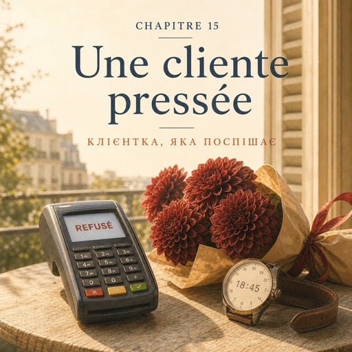

0:00
2:48
Натисніть речення, щоб почути його окремо.
Щоб слухати з підсвіткою — відкрийте сторінку в браузері.
Le vendredi 3 octobre — п'ятниця, 3 жовтня
Six heures quarante. Karim lave les seaux. Dans vingt minutes, le rideau descend.
Вісімнадцята сорок. Карім миє відра. За двадцять хвилин ролета опуститься.
La porte s'ouvre très vite.
Двері відчиняються дуже різко.
— Bonsoir ! J'ai vingt minutes. Enfin, quinze. Et quinze euros. Du coup, c'est simple.
— Добрий вечір! У мене двадцять хвилин. Ну, п'ятнадцять. І п'ятнадцять євро. Коротше, все просто.
Vingt-quatre ans, un manteau trop grand, un téléphone dans la main.
Двадцять чотири роки, завелике пальто, телефон у руці.
— Bonsoir. C'est pour offrir ?
— Добрий вечір. Це в подарунок?
— Oui. Pour quelqu'un que je ne connais pas encore.
— Так. Для того, кого я ще не знаю.
— ... D'accord. Pas de rouge, alors.
— …Зрозуміло. Тоді без червоного.
— Voilà ! Pas de rouge. Le rouge, c'est trop.
— Отож! Без червоного. Червоне — це занадто.
— Et pas de blanc non plus.
— І без білого теж.
— Le blanc, c'est pour autre chose.
— Біле — це для іншого.
Elle calcule en marchant vers les seaux. Des dahlias ou des roses ?
Вона рахує, поки йде до відер. Жоржини чи троянди?
Les dahlias tiennent plus longtemps.
Жоржини стоять довше.
Elle prend cinq dahlias rouge sombre. Jamais quatre.
Вона бере п'ять темно-червоних жоржин. Ніколи не чотири.
Chez elle, un nombre pair de fleurs, c'est pour les morts.
Удома парне число квітів — це для мертвих.
Ici, personne ne pense à ça. Ici, on dit seulement que l'impair est plus joli.
Тут про це ніхто й не думає. Тут просто кажуть, що непарне гарніше.
Deux raisons différentes, le même bouquet.
Дві різні причини — той самий букет.
Le papier. Deux tours de ruban.
Папір. Два оберти стрічки.
— C'est à quelle heure ?
— О котрій вам треба?
— Sept heures et quart. À Bastille.
— О чверть на восьму. На Бастилії.
— Vous allez y arriver. Ça va prendre quatre minutes.
— Ви встигнете. Це займе чотири хвилини.
— Vous êtes sûre ?
— Ви впевнені?
Ça prend quatre minutes.
Це займає чотири хвилини.
— Cinq dahlias, douze cinquante. L'eucalyptus, il en reste peu, je vous le mets à deux cinquante.
— П'ять жоржин — дванадцять п'ятдесят. Евкаліпта лишилося мало, віддам за два п'ятдесят.
— Ça fait quinze euros. Pile.
— Разом п'ятнадцять євро. Рівно.
— Parfait. Je paie par carte.
— Чудово. Я карткою.
La carte ne passe pas.
Картка не проходить.
— Attendez, je réessaie.
— Заждіть, спробую ще раз.
La carte ne passe pas.
Картка не проходить.
— Non mais c'est pas vrai. Je vais être en retard. Je vais vraiment être en retard.
— Та ні, ну це неможливо. Я запізнюся. Я справді запізнюся.
Karim fait un pas vers la caisse. Natalia lève la main : non.
Карім робить крок до каси. Наталя піднімає руку: ні.
Elle ne dit rien pendant deux secondes. Elle réfléchit dans l'ordre.
Дві секунди вона мовчить. Думає по черзі.
— Vous avez une autre carte ?
— У вас є інша картка?
— Et sur le téléphone ?
— А в телефоні?
— ... Attendez.
— …Заждіть.
— Et sinon, prenez-les. Vous paierez lundi.
— А як ні — беріть так. Заплатите в понеділок.
La jeune femme lève les yeux de son téléphone.
Дівчина відриває очі від телефона.
— Vous feriez ça ?
— Ви б так зробили?
— Essayez le téléphone d'abord.
— Спершу спробуйте телефон.
Le téléphone marche.
Телефон спрацьовує.
— Ouf. Merci. Vraiment.
— Фух. Дякую. Справді.
Elle prend le bouquet et elle est déjà à la porte.
Вона бере букет і вже стоїть у дверях.
— Vous êtes nouvelle, vous ?
— А ви новенька?
— Depuis trois semaines.
— Уже три тижні.
— En vrai, vous alliez me faire confiance. Moi c'est Camille. Je reviens, hein.
— En vrai, ви готові були мені повірити. Я Каміль. Я ще прийду, ага.
Et elle est partie.
І її вже немає.
Karim, derrière le comptoir :
Карім із-за прилавка:
— « En vrai », ça veut dire « vraiment ». Et elle a raison : personne ne fait ça.
— «En vrai» означає «насправді». І вона має рацію: так ніхто не робить.
Solange sort de l'atelier. Elle a tout entendu et elle n'a rien dit.
Із майстерні виходить Соланж. Вона все чула й нічого не сказала.
— Vous avez proposé de la laisser partir sans payer.
— Ви запропонували відпустити її без оплати.
— Pour quinze euros, c'est bien. Pour cent cinquante, vous venez me chercher.
— На п'ятнадцять євро — добре. На сто п'ятдесят — ідете по мене.
— Et elle paie toujours. C'est la troisième fois qu'elle fait ça avec cette carte.
— І вона завжди платить. Це вже третій раз із цією карткою.
À sept heures, le rideau de fer descend.
О сьомій залізна ролета опускається.
— Celle-là, elle revient, dit Karim. Toujours pressée. Toujours en retard.
— Ця ще прийде, — каже Карім. — Завжди поспішає. Завжди спізнюється.
Dehors, il fait déjà nuit. C'est la première fois cette année.
Надворі вже темно. Цього року вперше.
Natalia remonte la rue de Bretagne. Elle n'est pas pressée du tout.
Наталя йде вгору вулицею Бретань. Вона нікуди не поспішає.